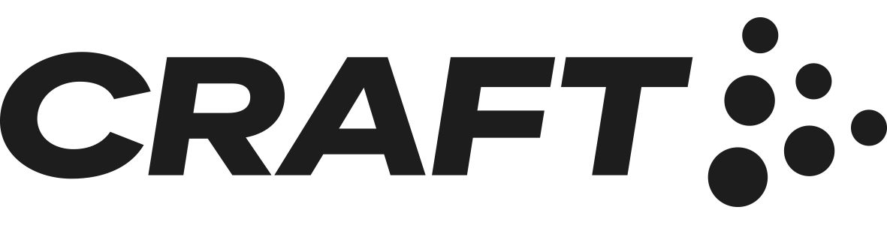

“Grâce à Pachamama, on a validé nos hypothèses en quelques jours et gagné 3 semaines sur notre time-to-market.”



Etudes de marché, enquêtes utilisateurs, tests terrain: des résultats sous 3 jours pour accélerer vos innovations.
Solutions 360 pour vous accompagner à chaque étape du cycle de développement produit.

Confirmez vos hypothèses, itérez et trouvez votre product market fit rapidement avec nos tests et sondages express.
Nos études de marché conçues sur-mesure identifient les segments porteurs et vous apportent des insights fiables et actionnables.

Nos tests produits sur le terrain et nos sessions de co-création engagent votre cible et accélèrent votre récolte de retours utilisateurs.
“Grâce à Pachamama, on a validé nos hypothèses en quelques jours et gagné 3 semaines sur notre time-to-market.”
“Nous avons identifié une opportunité sur la cible très porteuse des plus de 55 ans. Nous avons intégré cette nouvelle gamme à notre plan 2025 avec un potentiel de +15% de CA.”
“On a accéléré l’adhésion au produit en récoltant plus de 200 avis en amont du lancement.”
Réservez dès maintenant votre session de découverte gratuite pour identifier vos leviers de performance produit.
Testons vos idées ensemble